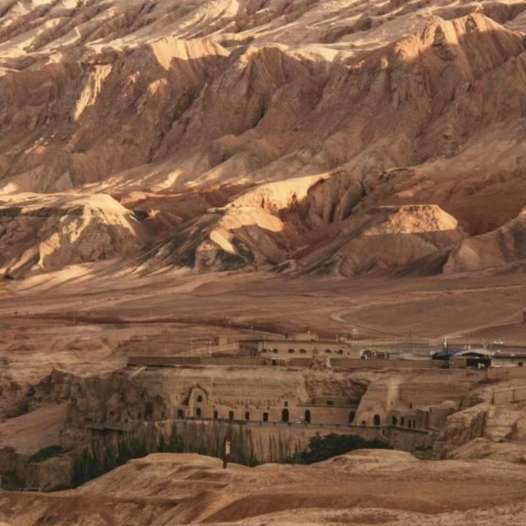
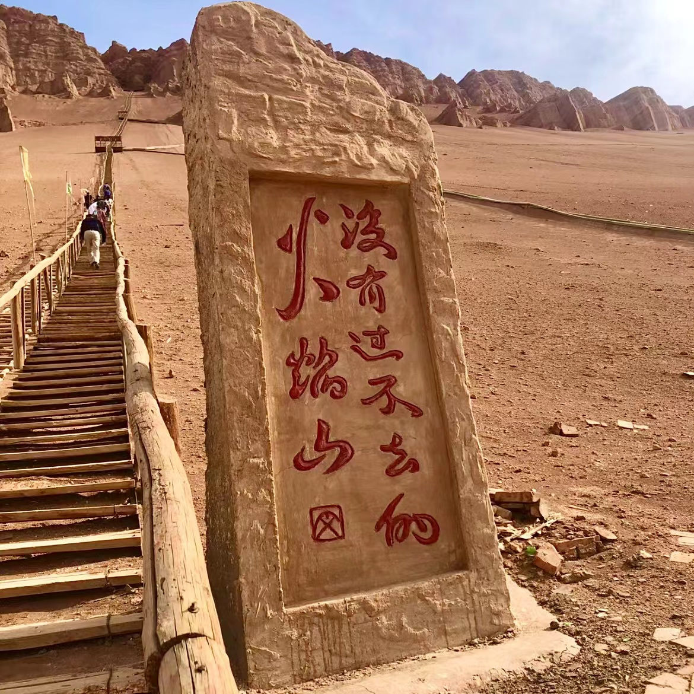
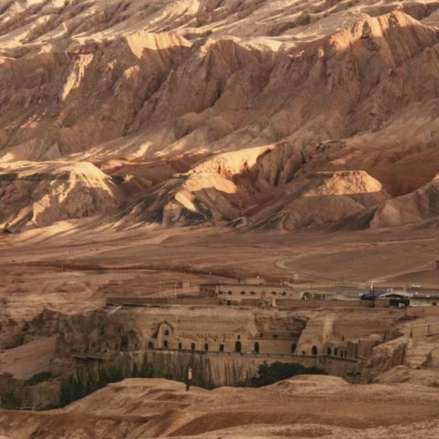
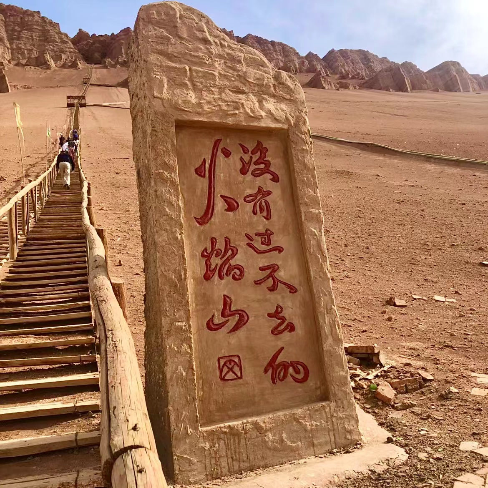

Flame Mountain is located on the 312 National Highway in Gaochang District, Turpan City, Xinjiang Uygur Autonomous Region, the northern edge of the Turpan Basin, and the northern route of the ancient Silk Road, in an east-west direction. It is 10 kilometers east of Turpan City, 183 kilometers away from Urumqi City, 98 kilometers east of Shanshan County, 324 kilometers away from Hami City, 450 kilometers south of Ruoqiang County, and 290 kilometers north of Qitai County. The main peak of Flame Mountain is Qinglongzui, with an elevation of 831.7 meters.
.jpg) 



Flame Mountain, also known as "Kiziltag" in Uyghur, means "Red Mountain". It was once named "Volcano" by the Tang people due to its scorching heat. Flaming Mountain and Tongshan Mountain are barren, with no grass growing and birds disappearing. Every summer, when the red sun is shining in the sky, the reddish brown mountains are illuminated by the scorching sun, the sandstone is burning and shining, and the hot airflow is rolling and rising, just like a raging flame, the tongue of fire is stirring up the sky, so it is also known as Flame Mountain.
The Flaming Mountain is one of the branches of Tianshan Mountains, which was formed during the Himalayan orogeny 50 to 60 million years ago. For thousands of years, the countless fold belts left by the lateral movement of the Earth's crust and the wind erosion and rain stripping of nature have formed the undulating mountain terrain and vertical and horizontal gullies of Flame Mountain.
Flame Mountain has its unique natural appearance, and in the late Ming Dynasty, Wu Cheng'en hindered Tang Sanzang's access to the Flame Mountain. The story of Sun Wukong borrowing a banana fan was written into the famous ancient novel "Journey to the West", linking Flame Mountain with Tang Monk, Sun Wukong, Princess Iron Fan, and Bull Demon King, making it a magical mountain with rich colors and becoming a wonder in the world.
According to Uyghur folklore, there is a dragon deep in the Tianshan Mountains that specializes in eating boys and girls. Send a special force to subdue the dragon. After a thrilling battle, the dragon was killed in the Qijiaojing Well in the northeast of Turpan. The dragon was wounded and traveled westward, staining the entire mountain with blood. Therefore, the Uyghurs call this mountain Red Mountain, also known as Flame Mountain.